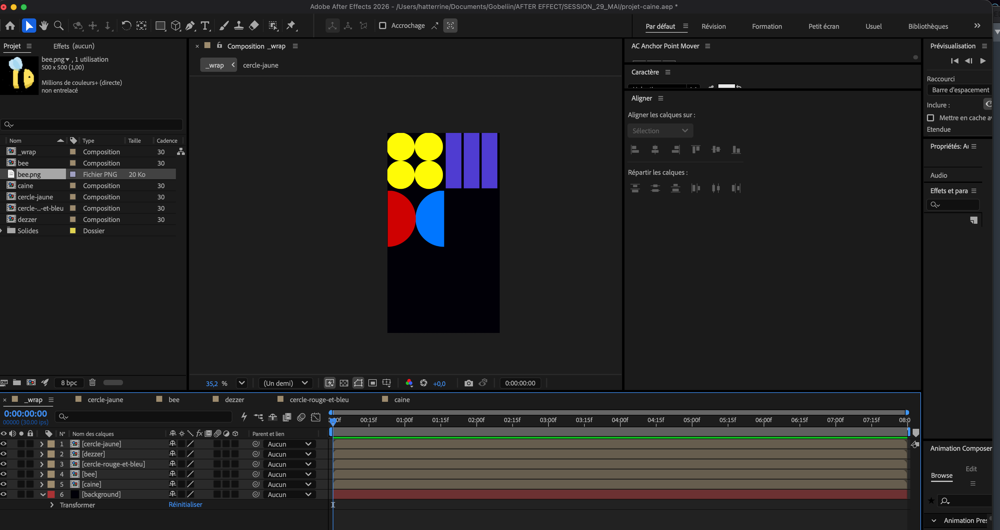
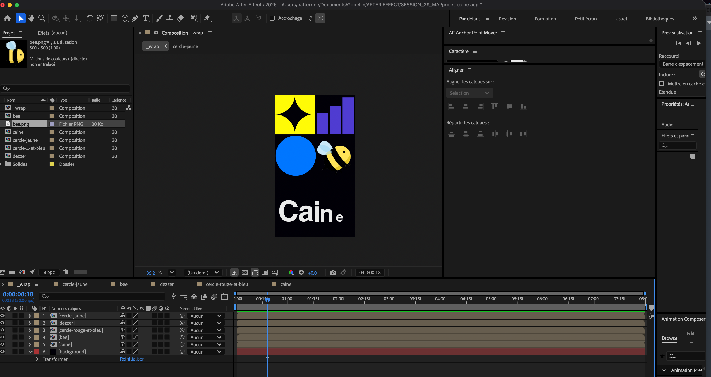

Ifest version TADC
Dans le cadre d'un cours d'After Effect
j'ai pu réaliser ma toute première animation en 2D.

Pour répondre au brief, j’ai d’abord défini une direction artistique inspirée de l’univers visuel d’iFest et du personnage de Caine de The Amazing Digital Circus. J’ai conçu les éléments graphiques sur Illustrator avant de les intégrer dans After Effects. J’ai ensuite animé chaque composant individuellement en exploitant les différentes fonctionnalités du logiciel, puis assemblé l’ensemble dans une composition finale afin d’obtenir une animation cohérente, dynamique et fidèle à l’univers choisi.
J’ai d’abord conçu l’illustration de l’abeille sur Adobe Illustrator. J’ai ensuite recréé les différents éléments graphiques et typographiques dans After Effects afin de les préparer à l’animation. Enfin, j’ai animé chaque élément séparément avant de les assembler dans une composition finale pour obtenir un rendu cohérent et dynamique.


Pour cette animation, je me suis inspiré de l’univers de Caine en reprenant plusieurs codes visuels de la série. Les couleurs rouge, bleu et violet font référence à différents personnages, tandis que les cercles jaunes se transforment en étoile lors de l’animation. Enfin, l’abeille remplace la flèche de la référence originale en clin d’œil à un élément associé au personnage.